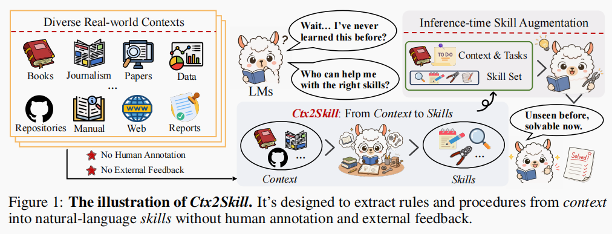
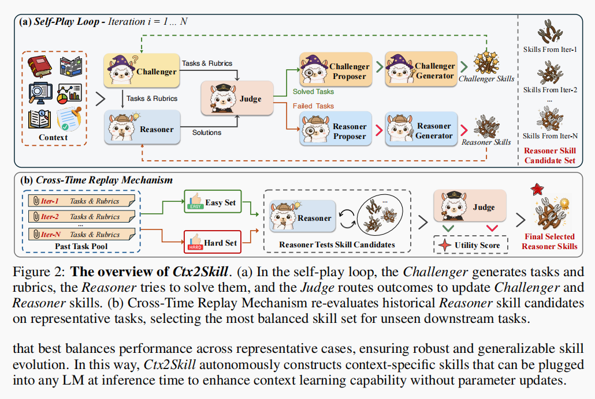
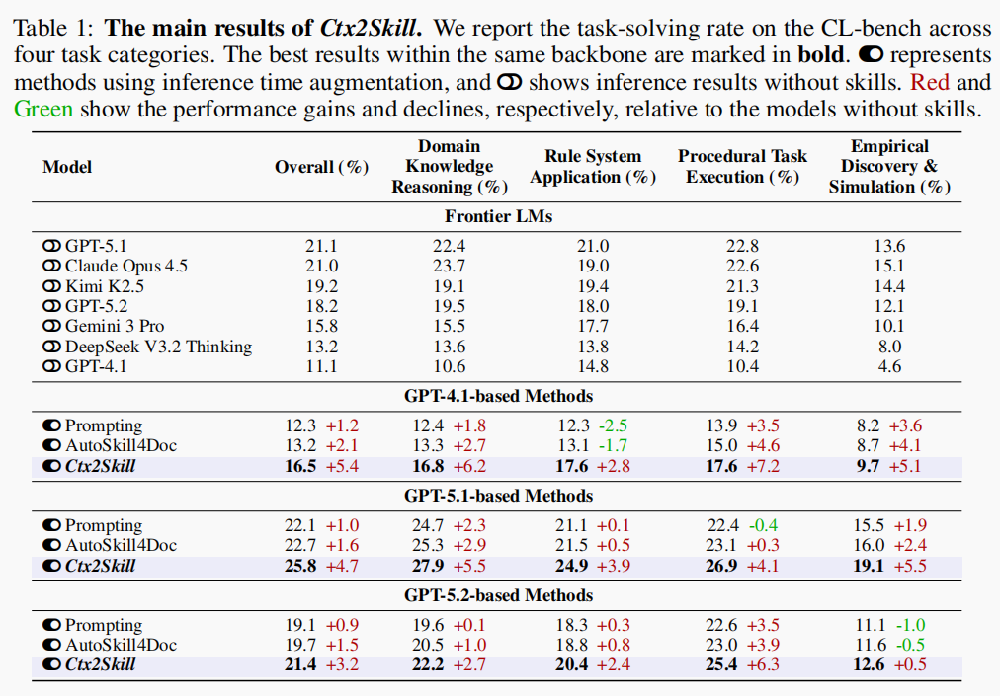
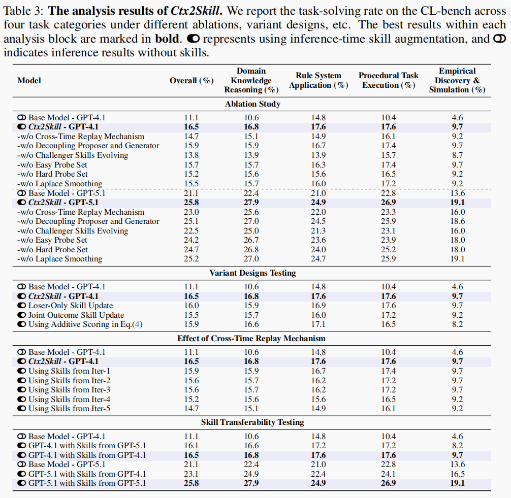
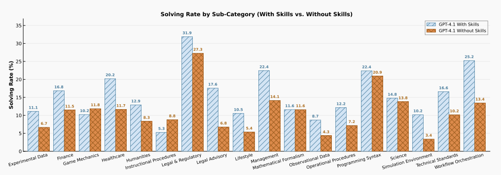

From Context to Skills: Can Language Models Learn from Context Skillfully?
论文信息：Shuzheng Si et al., THU DeepLang AI / UIUC / FDU / CUHK, arXiv:2604.27660v3 (2026.06)。 论文原文 提出 Ctx2Skill——一个无需人工标注、无需外部反馈、无需参数更新的"上下文 → 技能"自演化框架。

1. 摘要 (Abstract)
- 核心问题：真实任务常要求模型利用上下文中的新知识（超越预训练参数），即"上下文学习 (Context Learning)"。
- 现有瓶颈：① 手动构建技能成本极高——长且技术密集的上下文要求标注者完全内化内容；② 上下文学习任务缺乏外部反馈（如执行结果、标准答案）来验证技能质量。
- 提出的方案 (Ctx2Skill)：
- 多智能体自我对弈：挑战者 (Challenger) 生成任务与评分标准 (Rubrics)、推理者 (Reasoner) 基于技能解题、评判者 (Judge) 给出二元反馈。
- 进化机制：双方各有 Proposer + Generator，分析失败/成功案例，将诊断转化为自然语言技能更新，双方技能协同进化。
- 稳定性保障：引入跨时间重放 (Cross-Time Replay)，防止挑战者生成极端任务导致推理者技能过度专化（对抗性崩溃 Adversarial Collapse）。
- 效果：在 CL-Bench 四个任务类别上，显著提升多个 backbone 的解决率（如 GPT-4.1 从 11.1% → 16.5%，GPT-5.1 从 21.1% → 25.8%，GPT-5.2 从 18.2% → 21.4%）。所得技能可插入任意 LM。
2. 引言 (Introduction)
- 背景：现有模型在竞赛数学、编程等预训练覆盖领域表现优异，但面对产品文档、临床指南、实验数据等全新复杂上下文时能力不足——这正是"上下文学习"要解决的。
- 上下文学习的难点：上下文形式多样（书籍、实验数据、搜索结果等），知识隐含其中，需要深度理解与归纳，而非浅层检索。
- 推理时技能增强 (Inference-time Skill Augmentation) 的两大困境：
- 高昂的人工标注成本：技术密集的长文档要求标注者完全内化多节内容，认知负荷大且经济上不可行，无法规模化。
- 缺乏外部反馈：不像代码执行或数学题有标准答案，上下文学习无自动信号判断技能是否忠实、完整地捕捉了上下文知识；仅凭上下文无法判断生成技能是否有用或遗漏关键知识。
- Ctx2Skill 的定位：不更新模型参数、不依赖人工标注与外部反馈，仅凭上下文本身，通过自然语言技能增强推理；所得技能可插入任意 LM，泛化到同一上下文的任意未见任务。
3. 相关工作 (Related Work)
- 上下文学习 (Context Learning)：区别于长文本理解（检索/阅读理解）与上下文内学习 In-context Learning（指令/示例），强调从复杂上下文中归纳新规则与流程。现有前沿模型尚未掌握此能力。
- 技能增强 (Skills for LMs)：
- 人工构建：早期技能库有效但无法规模化。
- 自动化构建（依赖外部反馈）：AutoSkill（交互轨迹提取）、AutoRefine（轨迹转专长）、CoEvoSkills（生成器-验证器协同进化）、EvoSkill（失败驱动细化）、SkillX（层级技能库 + 执行反馈）等均依赖执行反馈 / 标准答案对比 / 任务完成奖励，不适用于无反馈的上下文学习场景。
- 参数内化：SKILL0（上下文 RL 吸收技能）、SkillRL（RL 蒸馏层级技能库）需参数访问，不适用于闭源模型，且牺牲可解释性。
- Ctx2Skill 的突破：无需人工标注、无需外部反馈、无需参数更新，仅凭上下文本身即可自主发现并演化技能的方法。
4. 方法论 (Methodology) —— 核心章节
4.1 概述 (Overview)
引入 Ctx2Skill 框架，核心由两部分组成：技能优化的自我对弈循环 (Skill-Optimized Self-Play Loop) 与跨时间重放机制 (Cross-Time Replay)。
- (a) 自我对弈循环（Iteration i = 1…N）：挑战者基于上下文与自身技能生成"任务 + 评分标准"；推理者基于上下文与自身技能作答；评判者按评分标准给出二元判定，将结果路由（失败 → 推理端，成功 → 挑战端）；各端的 Proposer → Generator 据此更新本端技能，进入下一轮。双方技能严格隔离、互不可见。
- (b) 跨时间重放机制：循环中动态收集 Easy / Hard 两个探测集（取自 Past Task Pool），循环结束后让推理者用各历史候选技能集 {S₁ᴿ, …, S_Nᴿ} 重新作答，由评判者重评，计算 Utility Score（解决率乘积），选出最均衡的技能集作为最终输出。

4.2 问题形式化 (Problem Formulation)
- 给定上下文 \(C\)（可能超出预训练语料）、任务集 \(\mathcal{T}=\{t_j\}\)（答案依赖 \(C\)）、二元评分标准集 \(\mathcal{R}_j=\{r_{j,k}\}\)。
- 全有或全无 (All-or-nothing)：只有当答案满足所有评分标准时任务才算解决。求解指示函数： [ y(j,p;C)=\prod_k \mathbf{1}!\left[r_{j,k}(a_j)=\text{pass}\right],\quad a_j\sim p(\cdot\mid C,t_j) ]
- 目标：构建自然语言技能集 \(\mathcal{S}\)（一份简短的 Markdown，预置到系统提示），在不更新参数、无外部反馈的前提下，提升模型在未见任务上的表现：\(a_j\sim p(\cdot\mid \mathcal{S},C,t_j)\)。
- 训练阶段 \(\mathcal{S}\) 实例化为两套相互隔离的技能集：推理者 \(\mathcal{S}^R\) 与挑战者 \(\mathcal{S}^C\)；推理时仅部署 \(\mathcal{S}^R\)。
4.3 Ctx2Skill 框架（核心机制）
五个冻结参数的 LLM 角色（均仅靠提示工程驱动，迭代 \(i\) 时）：
- 挑战者 (Challenger)：给定 \(C\) 与当前 \(\mathcal{S}^C_{i-1}\)，生成一批共 \(M\) 个任务 \(\{t_m\}\)，每个配备评分标准 \(\mathcal{R}_m\)。评分标准要求正确答案必须归纳 \(C\) 的规则而非复述表层片段；通过条件化于自身技能调整探测策略，随推理者进步维持对抗压力。
- 推理者 (Reasoner)：给定 \(C\)、任务 \(t_m\) 与当前 \(\mathcal{S}^R_{i-1}\)，产出答案 \(a_m\)。技能集把长而密集的上下文蒸馏为简洁、结构化的规则与流程，免去每次从零提取。
- 评判者 (Judge)：按每条评分标准给出二元判定 \(z_{m,k}=\mathbf{1}[r_{m,k}(a_m)=\text{pass}]\)，并得求解指示 \(y_m=\prod_k z_{m,k}\)。严格评估：当且仅当满足所有评分标准才算解决。
- 提议者 (Proposer)（双方各一）：二元判定只指出失败/成功，不指出原因。Proposer 汇总本端所有路由案例（任务 + 评分标准 + 推理者答案），联合分析而非逐案孤立诊断，归纳共性失败/成功模式，输出高层诊断（动作 = add/merge，目标技能名、描述、理由）。
- 推理端 Proposer：取失败案例集 \(\mathcal{F}_i\)，对照 \(\mathcal{S}^R_{i-1}\)，诊断缺失或误表达的上下文知识。
- 挑战端 Proposer：取轻易解决案例集 \(\mathcal{P}_i\)，对照 \(\mathcal{S}^C_{i-1}\)，审视推理者如何用现有技能解题，找出任务与评分标准生成策略的漏洞。
- 生成者 (Generator)（双方各一）：将 Proposer 的高层诊断具体化为完整的、可替换的技能集；在新增/合并条目的同时保留所有无关条目。推理端产出 \(\mathcal{S}^R_i\)，挑战端收紧 \(\mathcal{S}^C_i\) 以探测推理者残余弱点。
迭代流程：生成任务 → 推理 → 评判 → 路由（失败 \(\mathcal{F}_i\) 给推理端，成功 \(\mathcal{P}_i\) 给挑战端）→ 双端 Proposer/Generator 更新技能集 → 进入下一轮。任何提示都不以对方技能集为条件，保持双方严格对抗。
4.4 跨时间重放机制 (Cross-Time Replay)
- 问题背景（对抗性崩溃 Adversarial Collapse）：框架本意通过更新 \(\mathcal{S}^C\) 持续加强挑战者以维持对抗压力，但这带来内在张力——随迭代推进，挑战者生成的任务越来越极端、集中于推理者残余弱点，逐渐偏离 \(C\) 的代表性知识；由于推理者技能更新是失败驱动的，其技能会过度专化于这些病态案例，导致冗余技能堆积、泛化下降。更糟的是，该崩溃在循环内无法察觉：每轮评判者只评估当轮新任务，无法反映早期掌握的知识是否被后续编辑破坏。因此无条件返回最后一轮 \(\mathcal{S}^R_N\) 不可靠。
- 解决方案：用循环过程中自我收集的代表性探测集，从候选 \(\{\mathcal{S}^R_1,\dots,\mathcal{S}^R_N\}\) 中选出最具泛化性的技能集，全程无需外部监督：
- 每轮增量收集两个小探测集：困难探测集 \(\mathcal{Q}^h\)（当轮失败任务中评分通过率最低的）与简单探测集 \(\mathcal{Q}^e\)（当轮成功任务中评分标准最少的）——分别捕捉每轮最难失败与最易成功。
- 循环结束后，推理者用每个候选 \(\mathcal{S}^R_i\) 重新作答两个探测集，评判者重评，得拉普拉斯平滑后的解决率： [ \rhoh(i)=\frac{\sum_{q\in\mathcal{Q}h} y_q(\mathcal{R};C,\mathcal{S}R_i)+1}{|\mathcal{Q}h|+1},\quad \rhoe(i)=\frac{\sum_{q\in\mathcal{Q}e} y_q(\mathcal{R};C,\mathcal{S}R_i)+1}{|\mathcal{Q}e|+1} ]
- 选择使乘积最大的迭代技能集：\(\mathcal{S}^R_*=\mathcal{S}^R_{i^*},\ i^*=\arg\max_i \rho^h(i)\cdot\rho^e(i)\)。
- 乘积形式的关键作用：为攻克后期特殊失败而牺牲简单题的技能集会被 \(\rho^e\) 惩罚；只守住简单题却放弃难题的会被 \(\rho^h\) 拒绝。拉普拉斯平滑保证探测集在某轮为空时乘积仍良定义。
- 推理时：\(\mathcal{S}^R_*\) 预置到推理者系统提示，用于任意未见任务（条件化为 \(p(\mathcal{S}^R_*,C,t)\)）。由于 \(\mathcal{S}^R_*\) 编码的是 \(C\) 的可复用上下文知识而非任务特解，可泛化到同上下文的任意任务；且每个上下文只构建一次、跨所有未见任务复用，成本随 \(|\mathcal{T}|\) 摊销，单次部署查询无额外开销。
5. 实验 (Experiments)
5.1 实验设置 (Settings)
- 评估基准 CL-Bench：500 个复杂上下文、1,899 个任务、31,607 条评分标准，由领域专家制作；每个任务所需新内容均包含在对应上下文内。覆盖 4 大类别：领域知识推理 (Domain Knowledge Reasoning)、规则系统应用 (Rule System Application)、程序任务执行 (Procedural Task Execution)、经验发现与模拟 (Empirical Discovery & Simulation)。全有或全无打分；评分标准级评分遵循基准协议，评判者固定为 GPT-5.1，其与跨验证器及人工的一致率均 >90%。
- 前沿基线模型 (Frontier LMs)：GPT-5.1、Claude Opus 4.5、Kimi K2.5、GPT-5.2、Gemini 3 Pro、DeepSeek V3.2 Thinking、GPT-4.1（支持思考模式的用默认推理努力）。
- 技能方法对比：
- Prompting：单次直接让 LM 读 \(C\) 生成技能集，推理时预置。
- AutoSkill4Doc：AutoSkill 的文档级变体——将 \(C\) 分窗，各窗内识别独立技能，再跨窗重组为技能集。
- 两种基线的技能生成与推理用同一 backbone（如所有 GPT-4.1-based 方法均用 GPT-4.1 做生成与评估），确保公平。
- 实现细节：每个上下文跑 \(N=5\) 轮自我对弈，每轮 \(M=5\) 个任务。挑战者/推理者/Proposer/Generator 均用对应系列同一 backbone；评判者用 GPT-5.1。受 API 预算限制未尝试更大 \(N\)、\(M\)，但最有效技能集通常出自早期迭代（见 5.3），且 \(M=5\) 已足以让 Proposer 归纳出有意义的诊断模式。
5.2 主要结果 (Main Results)

- 在四个类别上均大幅优于 Prompting 与 AutoSkill4Doc。
- 类别差异：在"程序任务执行"与"经验发现与模拟"上提升最明显，因其依赖对上下文更深的程序性与归纳性推理。
- 基线乏力：两基线仅小幅提升，偶尔反降（如 Prompting 使 GPT-4.1 的 Rule System Application 下降 2.5%），说明单遍技能提取不足以应对复杂上下文知识。
- 能力跨越：搭载 Ctx2Skill 技能的 GPT-4.1（16.5%）超过无技能的更强前沿模型 Gemini 3 Pro（15.8%），证明上下文特定技能可弥合显著的能力差距。
- 技能质量评估（Table 2，GPT-4.1 作评判）：从简洁性 (Conc.)、忠实度 (Faith.)、清晰度 (Clar.)、有效性 (Eff.)、可重用性 (Reus.) 五维度打分，Ctx2Skill 在三个 backbone 上均取得最高均分，分别较 AutoSkill4Doc 高 +3.6 / +2.1 / +2.3（GPT-4.1 / 5.1 / 5.2），其中忠实度与清晰度提升最显著——表明迭代自弈产出的技能不仅提升下游推理，且结构良好、可读、可检查、可复用。
5.3 详细分析 (Analysis)
- 消融实验：

- 移除"挑战者技能进化"导致最大下降 → 持续对抗压力是推理者渐进发现上下文知识的关键。
- 移除"跨时间重放"为第二大下降 → 最后一轮技能确有对抗性崩溃。其中困难探测集贡献 > 简单探测集，移除拉普拉斯平滑也会下降。
-
合并 Proposer 与 Generator 为单智能体 → 小幅但一致的下降 → 将"诊断"与"具体化"解耦有效。
-
子类别影响（Figure 3）：

- 变体设计测试 (Variant Designs，GPT-4.1)：
- Loser-Only Skill Update（每轮只更新失败方）：-0.5%，说明双向更新更利于协同进化。
- Joint Outcome Skill Update（正负例同时喂给双方）：-1.0%（降幅更大），说明混合结果稀释了诊断信号。
-
Additive Scoring（用 \(\rho^h+\rho^e\) 替换乘积）：-0.6%，证实乘法更能惩罚"为难题牺牲简单题"的偏科。
-
跨时间重放效果 (Effect of Cross-Time Replay，GPT-4.1)：固定使用某一轮技能时，性能从 Iter-1（15.9%）到 Iter-5（14.7%）单调下降，证实后期存在对抗性崩溃；跨时间重放（16.5%）优于任何固定轮次（含最佳的 Iter-1，约 +0.6%），因为它按上下文自适应选最均衡技能集，而非对所有上下文锁死同一轮。
-
技能可迁移性 (Skill Transferability)：
- GPT-5.1 生成的技能迁移给 GPT-4.1 → 16.1%，接近 GPT-4.1 原生技能（16.5%）。
- GPT-4.1 生成的技能迁移给 GPT-5.1 → 23.1%（较 GPT-5.1 无技能 +2.0%），但明显低于 GPT-5.1 原生技能的 +4.6%。
- 非对称性：强模型生成的技能能良好迁移给弱模型；弱模型缺乏发现更强模型可利用知识的能力。
6. 结论 (Conclusion)
- Ctx2Skill 是一个自演化框架，无需人工标注与外部反馈，自主从复杂上下文发现、细化并选择上下文特定技能。
- 通过技能优化的自我对弈循环，挑战者与推理者经失败驱动的文本编辑协同进化技能集；跨时间重放通过选出跨迭代最具泛化性的技能集来防止对抗性崩溃。
- CL-Bench 实验表明：Ctx2Skill 在多个 backbone 与任务类别上持续显著提升上下文学习性能，且所得技能可跨模型迁移。
- 展望：希望为语言模型提供一种实用且可扩展的"从复杂未见上下文中巧妙学习"的范式。